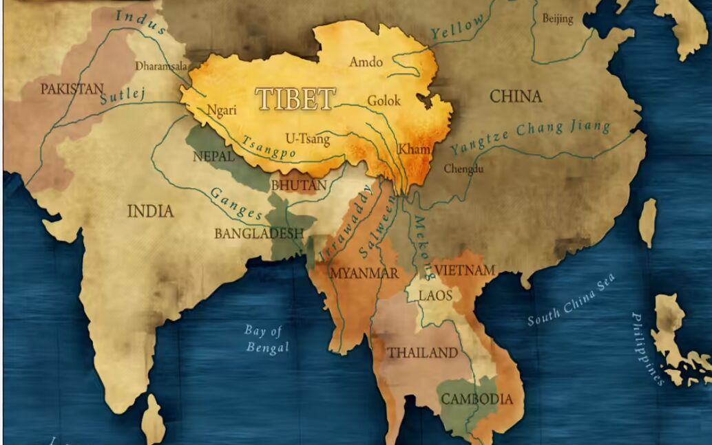
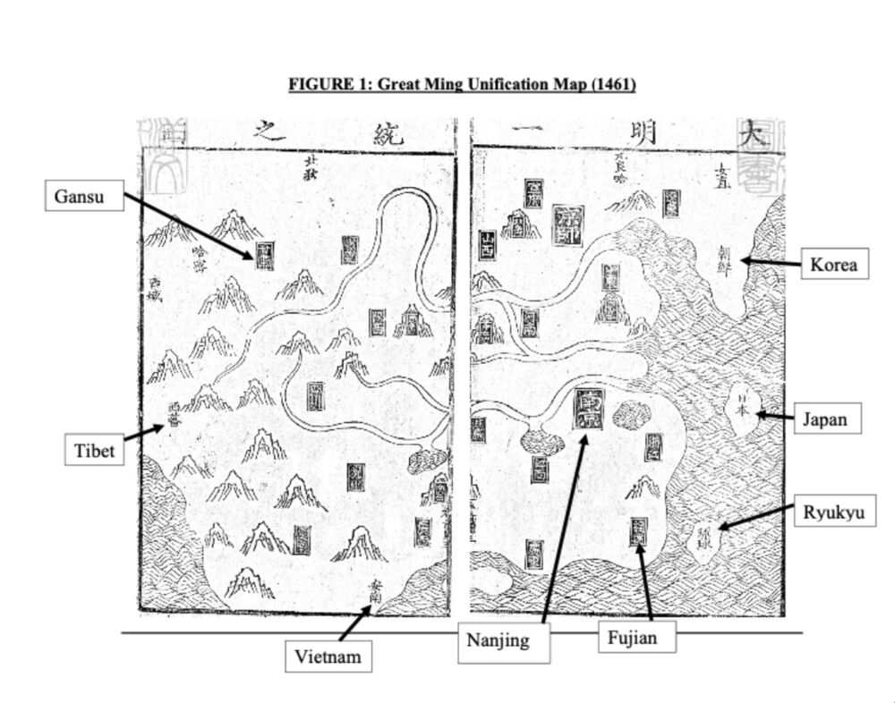

Tibet was never part of China
China is a signatory to the 1918 League of Nations Covenant and the 1945 United Nations Charter; both documents prohibit future (i.e., post-1918) territorial acquisitions via conquest.

Tibet was never part of China[1]
Why is the Topic Important?
China is a signatory to the 1918 League of Nations Covenant and the 1945 United Nations Charter; both documents prohibit future (i.e., post-1918) territorial acquisitions via conquest. Moreover, the People’s Republic of China (PRC) incessantly paints a sorry picture of China being a victim of Japan and the western colonial powers, and vehemently condemns these powers for their past conquests. Therefore, the PRC cannot admit that her 1950 annexation of Tibet is a new conquest, but must legitimise it by lying to the world that ‘Tibet has been part of China since antiquity西藏自古以来就是中国的一部分’ (see, e.g., the PRC’s State Council 1992 White Paper ‘Tibet: Its Ownership and Human Rights Situation,’ www.china.org.cn/e-white/tibet/9-1.htm). In contrast, the Central Tibet Administration (CTA) claims that Tibet has always been independent from China. This contrarian claim is used by the PRC as:
- A prima facie proof of CTA’s betrayal to her motherland (i.e., China), and
- Justification for not negotiating with the CTA or the Dalai Lama.
Most other similar international disputes are impossible to resolve because each side relies on its own ‘historical evidence’ and rejects the ‘historical evidence’ presented by the opposing side as false. Moreover, many polities do not have reliable historical records that date back sufficiently long. The China-Tibet dispute however, is a rare exception because:
- China has a multi-millennial tradition of keeping reliable historical records, and
- China’s own official/authoritative records unequivocally show that China never had sovereignty or governing power over Tibet before 1950 (although the PRC keeps this fact secret).
‘Guiding Principles’ for Judging whether Tibet was part of China before 1950
My book uses the following two Guiding Principles (GPs) to assess the situation.
GP#1: Using only Chinese documents that the People’s Republic of China recognises as authoritative
There are many groups of such documents, one example is China’s ‘Official History’ system:
- ‘Veritable Records (‘VRs’) 实录.’ After the death of each emperor, his successor convenes a panel to compile, using archival records, a set of annals for the deceased emperor’s reign.
- ‘Official Histories 正史.’ After the demise of each dynasty, the succeeding-dynasty’s regime convenes a panel to compile a comprehensive ‘History’ of the preceding dynasty based on the ‘VRs’ and other archival material.
Another example is the comprehensive catalogues of contemporaneous dynastic territories called Unification Records (一统志).
GP#2: Using proper criteria for judging a ‘Sovereignty’ claim
To judge whether China had sovereignty over Tibet during (say) the mid-Ming-dynasty[2] period, my book investigates whether mid-Ming China had, among others:
- published geographic documents showing Tibet as part of China,
- conducted census and collected taxes in Tibet,
- recognised Tibetans as Chinese subjects, and
- imposed China’s currency/coinage, language, legal codes and judicial system in Tibet.
My book shows that China’s own authoritative historical documents indicate clearly that through the centuries, China’s governments were never able to perform such basic governmental functions. Therefore, it can be concluded objectively that ‘Tibet was never part of China before 1950.’
One detailed example: The Great Ming Unification Record (GMUR) 敕修大明一统志clearly indicates that Tibet was not part of the Ming Empire
An edition of GMUR[3]was commissioned by Ming Emperor Yingzong and published in 1461. The GMUR’s Preface, written by the Emperor himself, states that:
…As for governing within our national boundaries, … the ‘Chinese world’ (天下) is divided into 13 provinces, namely: Shanxi, Shandong, Henan, Shaanxi, Zhejiang, Jiangxi, HuGuang, Sichuan, Fujian, Guangdong, Guangxi, Yunnan, and Guizhou.
Interpretation: The emperor states that the ‘Chinese world’ consists of only the explicitly-listed ‘13 provinces’; Tibet is not included.
Table 1 presents an abridged version of GMUR’s Table of Contents. Two key points warrant special attention:
- Out of the 90 Scrolls in the entire GMUR book, the first 88 Scrolls are devoted to China’s territories. Within them, Scrolls 86-87 cover Yunnan Province, and Scroll 87 records Burma, BaBaiDaDian (i.e., northern Thailand) and Laos as part of Yunnan Province; that is, they were considered as ‘regular’ Ming-territories just like Beijing or Fujian province, demonstrating the Ming-Empire’s very inclusive attitude in declaring whether a certain region was ‘part of China.’
- Tibet however, is relegated to the ‘Foreign Aliens’ section (Scrolls 89-90) at the end of the book, together with such polities as Japan and the Arabian Mecca and Medina.
TABLE 1: The Structure of the Great Ming Unification Record
Scroll # | Name of the Scrolls and the Entities Covered by these Scrolls |
|---|---|
| 1 | National Capital Cities, ShunTian Prefecture |
| 32 | ShaanXi Province 陝西布政司：XiAn Prefecture I 西安府 上 |
| 37 | ShaanXi Province contd. 續‘陝西布政司’ |
| 86 | Yunnan Province 雲南布政司：various prefectures/counties etc. |
| 87 | Yunnan Province cont. 續‘雲南布政司 ’：…Burma District Office, 緬甸軍民宣慰使司; BaBaiDaDian District Office 八百大甸軍民宣慰使司; Laos District Office 老撾軍民宣慰使司… |
| 88 | Guizhou Province 貴州布政司 |
| 89 | Foreign Aliens 外夷：Korea, Manchuria, Japan, Ryukyu, XiFan西蕃 (Tibet), etc. (16 entities listed) |
| 90 | Foreign Aliens cont. 續‘外夷’：Vietnam, Siam, Java, Mecca, Medina, etc. (41 entities listed) |
Figure 1 shows the Great Ming Unification Map (GMUM) given in the GMUR. In this map, labels of ‘framed white text on black background’ are used for places within China (e.g., Capital City, Fujian Province, etc.). In contrast, foreign countries beyond the eastern national border such as Japan and Korea are labelled with ‘unframed black text on white background.’ The labels ‘Tibet 西蕃’ and ‘Western Lands西域’ on GMUM beyond China’s western border are also in ‘unframed black text on white background,’ just like Japan.
Great Ming Unification Map (1461)

My book presents several hundred proofs—drawn from China’s own authoritative documents—demonstrating clearly that Tibet was never historically part of China.
Footnotes
- This article is based on author’s book Tibet was never part of China since Antiquity (Publisher: Optimum Publishing International. ISBN-10:0888903782, ISBN-13:978-0888903785. 1272 pages. Publication date: February 2026).
- Ming dynasty, 1368 A.D. to 1644 A.D.
- The entire book (5500+ pages) can be downloaded from the Internet for free.